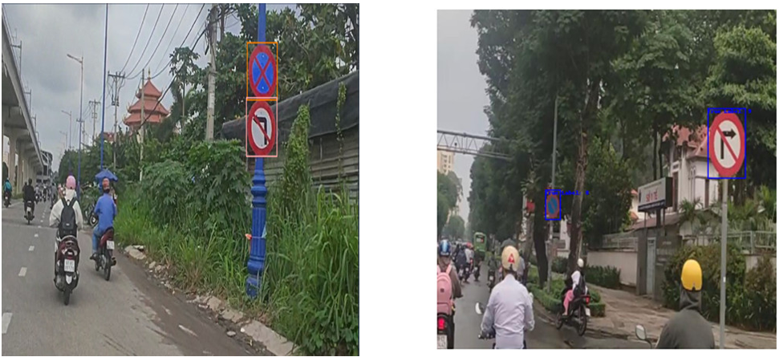
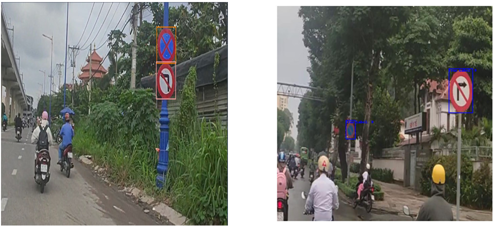
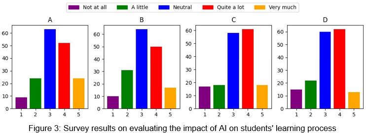

Huan Thai Phong
3rd-year student at FPT University
ü뮂Äçüéì About Me
Field of Study
Artificial Intelligence (AI)
Research Interests
- Natural Language Processing (NLP)
- Large Language Models (LLM)
- Retrieval Augmented Generation (RAG)
- AI Agents
üî¨ Publications
-
A Hybrid Dialogue System for Student Mental Health Assessment and Support
With the increasing prevalence of mental health issues, especially among university students, depression has emerged as a concern requiring effective support. To partially mitigate this, we develop a Vietnamese dialogue system that automates mental healthcare services for students facing significant stress...(Click the title to read more)


-
Vietnamese Traffic Sign Detection for Advanced Driving Assistant: Comparison Between YOLOv8 and Faster RCNN
With a market size of 100 million people, autonomous vehicles are poised to become a popular solution in the world in general and in Vietnam in particular shortly. However, the self-driving car system faces a significant challenge due to the limited availability of data on the current traffic conditions in Vietnam. Specifically, datasets and models for sign recognition in Vietnam are scarce, potentially impacting the widespread adoption of autonomous vehicles in the country. This article addresses the detection of common road traffic sign patterns using two models: Yolov8 and Faster R-CNN...(Click the title to read more)
 

-
The Rapid Development of AI and Its Impact on Technologically Lagging Students
The rapid advancement of artificial intelligence (AI) technology brings significant opportunities and challenges in the field of education. This progress creates a disparity in access and proficiency with AI technology, especially for those unfamiliar with it. This can lead to pressure from peers or society in general for those who cannot keep up with technological developments. This study highlights the pressures faced by students who struggle to keep pace with the development of AI, analyzing and evaluating the aspects these students encounter...(Click the title to read more)

üöÄ Project
Traffic Flow Realtime
Objective
The project aims to analyze and predict real-time traffic flow by detecting vehicles in two live-streamed videos on YouTube:
- Tokyo Shinjuku
- Colorado State Highway 82 (Grand Avenue, facing North) through downtown Glenwood Springs, Colorado